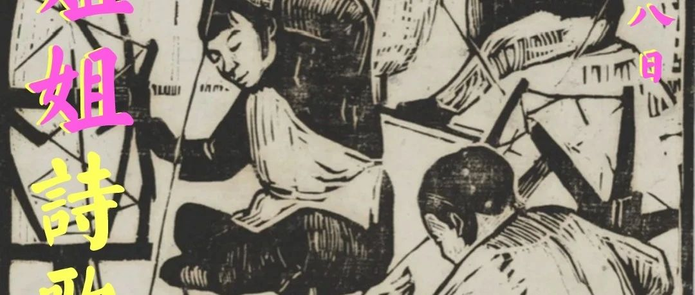

姐姐诗歌奖 · 征稿启事丨提供就业机会与旅行资助的民间诗歌奖
张甜
坏酷儿厨房bad queer cook
2023年09月09日 18:47
四川
姐姐诗歌奖
由
诗歌年代书店
发起，每年联合一位在各行业有着
「姐姐」
身份与担当的女性共同筹办，目的在于鼓励、支持更多女性表达与创作，第一届姐姐诗歌奖，我们联合的是一位家政公司的老板琴姐。我们渴望看到女性的生命力、欢愉与困苦以及种种日常生活，获奖者除了现金奖励之外，我们还将提供工作岗位和旅行资助。
表达、金钱、工作、旅行
，是我们认为每一位女性都应当积极争取的事物，这也是姐姐诗歌奖设立的初衷，希望所有的姐姐和妹妹们，能积极参与，我们将力求公平公正，认真对待每一份来稿，倾听你们的声音！
征稿要求
遥想
中国第一部诗集，取材于民间的《诗经》，诗、歌、舞相辅相成，正是中国戏曲的早期雏形，至今我们还能常常从普罗大众的日常口语及歌谣中，感受到最原始的某种诗意；古希腊戏剧也是源于诗歌，分为三大类：史诗、抒情诗和戏剧诗，当时的作家不叫剧作家，而是叫诗人。
因此，我们将「姐姐诗歌奖」的征稿体裁设置为
诗歌
和
戏剧
两种，其中诗歌不超过1000字，戏剧不超过20000字。「姐姐诗歌奖」面向
12岁以上的女性（含推荐人）
征集作品，限以中文（尤其
鼓励方言
）写作的未曾出版、未曾参与文学奖项的原创稿件。
奖项设置
一、姐姐诗歌
奖
不设名次
，每届从投稿作品中由
三
方评委
共同评选出
5份获奖作品
，
每位
作者皆可获得
1000元奖金
，以及
为期5天
的
绍兴
旅行资助
（书店提供指定食宿）
二、考虑到大部分女性可能看不到姐姐诗歌奖的信息，也不懂得如何参加一次文学奖，以及还有许多不会写字的年长女性，因此我们特别设置了
「推荐奖」5名
，无论作品获奖与否，每位推荐人皆可获得
500元奖金与500元
诗歌年代书店
写作基金
。如果你也认可女性需要更多的表达和创作，请将「姐姐诗奖」的信息告诉你身边的女性，鼓励、帮助她用诗歌或戏剧（
支持口述
）的形式讲述自己，并帮助她投稿，同时请附带一份你的推荐语（千字以内）。
三、
本届所有参与投稿的女性，如双方达成意愿，皆可获得一份由「姐姐诗歌奖」提供的
家政行业工作岗位
，如果没有相关工作经验也可获得免费培训，并提供面试指导。本届「姐姐诗歌奖」的联合发起人琴姐从事家政行业多年，帮助过一千名以上中老年农村女性就业。
她和我们说：
「只要有一份工作，哪怕再苦再不起眼，一个女人就总能活下去。」
衷心期待我们和琴姐的这份微薄心意，能帮助到哪怕只有一位需要工作的女性。
评委阵容及评分标准
一、
主审评委
（评分比重：50%）
由我们邀请的十位不同行业不同年龄的女性组成，包括诗人一名，戏剧从业者一名，其他领域评委八名。
二、
诗歌年代书店读者评委
（评分比重：20%）
由诗歌年代书店读者团统一评分
三、
网络投票
（评分比重30%）
在投票活动期内（截稿后，本公众号将发布来稿展示），由互联网投票计算评分
征稿日期
20
2
3年9月8日—2023年12月8日
奖项公布日期
2024年2月4日（公布日即兑现奖金与其他奖励）
颁奖日期
2024年3月8日
其他征稿事项
征稿邮箱
：
1402962691@qq.com
手写稿件投递地址
：浙江省绍兴市越城区相家桥四号楼，诗歌年代书店（收）
*来稿请注明「姐姐诗歌奖」字样，手写稿投递如需获取收件人电话请私信后台获取
愿姐姐妹妹们写作愉快，期待大家在文字与旅途中早日相见！